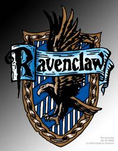
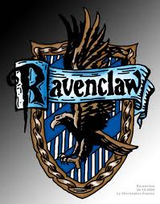

Personal website of Eddie Gurnee
Avid computer user since I was very young, I didn't
realize that I was a nerd until early High school,
and since then I've been trying to make up for lost time.
Current student at Eastern Michigan University.
Formerly Education Major, formerly English Major,
formerly Economics Major, currently Computer
Science - Applied Major.
 


Link to COSC 231 Page
Areas of knowledge:
- Science Fiction and Fantasy (Star Wars, Harry Potter, A Song of Ice and Fire, H.P. Lovecraft, and J.R.R. Tolkien)
- Video Games (Computer, PS3, PSP, Nintendo Handheld, and SNES through Gamecube)
- Roleplaying Games (Dungeons and Dragons 3.5, Pathfinder, Star Wars d20, Hunter: the Vigil, Vampire: the Requiem, Scion, Mouse Guard Roleplaying Game)
- Board Games (Settlers of Catan, Dominion, Arkham Horror, Board Game of Thrones, DC Deck Building Game, Munchkin)
- Programming (Basic Java (and growing), limited Visual Basic)
- General computer knowledge
Contact Me
Link to my public LinkedIn Profile
Link to my public Stack Overflow Profile
Things to check out to better understand me:
Please don't judge the webpage, or my life, too harsly as they are both works in progress.